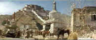
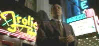
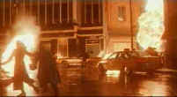
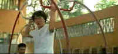

8-Bit DVD Page
| Film on Disc has 2-bit, 8-bit and 16-bit
reviews. 2-bit reviews include letter ratings only. 8-bit reviews are brief reviews
including DVD quality assessment and 16-bit reviews are full length. This is the 8-Bit
Review Page. DVD ratings are two part, the first letter representing film content, the
second letter for film element , transfer and pressing quality. |
Seven Years in Tibet/B-,A |
L.A.
Confidential/A,A |
Columbia/1997/125m/WS,ANA 2.35
The chief virtue of Seven Years in Tibet
is the scope of the film and the magnificent photography. Director Jean-Jacques Annaud has
traveled snow covered mountains before with the IMAX presentation, Wings of Courage.
That seems like it was practice run for the perfection of the snow work here. I think the
personal journeys are less successful and the film cannot recover from so severe a flaw.
Heinrich Harrer, the would-be hero of the piece, is too flawed and there never seems a
reason for him to change. It's almost as if the filmmakers depended on Brad Pitt's good
looks to make him sympathetic. It just doesn't seem to work.
Harrer, climbing under the Nazi flag, joins a Himalayan mountain
expedition. The mountaineer's arrogance makes itself immediately apparent and his lack of
team work threatens the success of the arduous climb. But his skill overcomes his
personality flaws and while the team winds up in a British prison when World War II breaks
out, they make a daring escape and flee through the mountains winding up in the legendary
city of Tibet's Dalai Lama, Lhasa.
 |
Approaching legendary
Lhasa.©Columbia |
Pitt plays Harrer with Austrian
ascent that's acceptable, but his performance lacks nuance. If the character is really
supposed to change, we never sense it from the performance, only from the text, and that's
not enough. Playing alongside Pitt, David Thewlis is as solid as the Lhasa foundations
playing mountain climber Peter Aufschnaiter. The casting of the key Tibetan characters is
very special. Jamyang and Sonam Wangchuk, brothers and sons of a Bhutan diplomat, with no
acting experience, play the young Dalai Lama at various ages. And the Dalai Lama's sister,
Jetsun Pema, plays his mother in the film. Lhakpa Tsamchoe, who works for the Tibet Youth
Congress, brings a beautiful innocence to the role of the woman who befriends the two
foreigners and marries Aufschnaiter.
Shot entirely on location in the Andes Mountains since the
filmmakers failed to obtain permission to film in Tibet or India, judicious use of
matte shots make it hard to believe the locale is not in fact Lhasa. Annaud spent 1994 and
1995 travelling around and in Tibet with his wife Laurence amnd took almost 17,000
photographs of the real city of Lhasa and its people and environs on which the production
design is based. Talk about passion! The production design and cinematography as well as
the obvious passion of director Annaud are the real highlights of this film.
Happily, this is gorgeous DVD. It is so very filmlike,
effortlessly depicting the vast expanses of snow or the colorfully dressed Tibetans.
Detail is immaculate, color perfectly pure. The explosive war sequences with varying
lighting have perfect contrast. John Williams' lush score is airy and dynamic |
|
Warner/1997/143m/WS,ANA
2.35
Let's
not mince words here. L.A. Confidential was unquestionably the best picture of
1997, hands down. At least the screenplay adaptation by director Curtis Hanson and Brian
Helgeland received the Academy Award. From the dense James Ellroy novel, the script is an
extraordinary accomplishment. The novel is very complex with story lines moving in a
million directions. It's a really great read, but the movie is something else again. It's
an amazing job of paring down the elements of the book without losing the grand scale of
the story.
Curtis Hanson rises to the very top of his profession with the
fantastic directing of L.A.Confidential. The director digs deep to find the
proper rhythms to move between the converging stories. The timing is perfect, the threads
woven together with brilliant precision. From the grand photography of Dante Spinotti and
elegant production design of Jeannine Oppewall to Jerry Goldsmith's stirring score, Hanson
puts all the pieces together. Along with the tightly scripted plot, action fans won't want
to miss one of the best screen shoot-outs of recent memory at the Victory Motel.
L.A. Confidential is Los Angeles in the beginning of the
1950s when Hollywood and television were about to collide and movie magazines spread star
stories across the nation. Not just another story of corruption in paradise, Ellroy's
novel is about changing values. It's characters are not black and white. It's heroes are
tarnished by the corruption around them and even the acts of heroism are questionable.
The cast is so good uniformly good I believe it hurt their
chances come award time. Russell Crowe is positively frightening as Detective Bud White.
Though he's not a big man, he fills the screen with his presence, bulking up from the
inside out. This guy is positively scary. Part white knight, part crude thug, White means
business. Kevin Spacey finds a perfect match for his talents as slick and sleazy cop Jack
Vincennes and Guy Pearce presents a chilling portrait as the ambitious up-and-comer Sgt.
Ed Exley. All supporting players are powerful presences including Kim Basinger as a
Veronica Lake hook-alike, James Cromwell as corrupt Dudley Smith and Danny DeVito as
tabloid editor Sid Hutcheons.
 |
Spacey cruising gritty L.A..©Warner |
What a gorgeous DVD! This is just the way I envisioned L.A.
Confidential when I first saw it, but I was disappointed with the choice of look. The
print I saw in the theater was washed out and grainy. This presentation blows away what I
saw in the theaters. The glossy nights filled with neon signs blazes beautifully on the
DVD. It's everything I could have hoped for and more. Sharp as can be with no NTSC or MPEG
artifacts in evidence, the colors pop off the screen with energy and force. The Dolby
Digital 5:1 sound is outstanding. Check out the the hail of bullets at the Victory Motel
shoot-out. It's amazing. And Jerry Goldsmith's score surrounds the action with beautiful
horns. Call it a reference DVD if you like. You won't find many better. And Warner's has
presented L.A. Confidential as a special edition to boot. I regret there is no
running commentary by Curtis Hanson, but the "making of" documentary is quite
good with insightful moments with director and cast. I recommend, however, watching the
"Photo Pitch," before the "Off the Record" documentary. This is the
way Hanson claims he sold the idea of L.A. Confidential to producer Arnon Milchan
and the tool he used to invest the cast with the feeling of period and themes. It's also
touched on in the documentary, but it's much better viewed first in this small gem of a
presentation. |
Mimic/B+,A- |
Supercop/B.B+ |
Buena Vista/1997/125m/WS 1.85
Mimic is a terrific horror movie. When a
mysterious virus born by cockroaches attacks the children of New York City, geneticist
Susan Tyler is called in to create a new insect that will rid the city of the roaches and
still the epidemic. Shortly after depositing the creepy crawlies in the sewer system, the
new insects do their job. As a precaution, the genetically created creatures are all male
to prevent reproduction and their live cycle is a short few months. Nothing like a little
planning to prevent the unexpected. Of course, this is the world of horror and science
fiction, so expect the unexpected.
Several years later some kids sell an interesting insect specimen
to good Doc Tyler, which she recognizes all too well. It's the "Judas Bug" that
she had created, but why is it alive.Tyler and her husband, a health official, enter the
bowels of the subway system to find out what's going on Meanwhile, an autistic boy
has been watching a strange looking cloaked figure from his window across from a church
where so very violent incidents have occured. When the boy wanders into the church
to see what's happening, he disappears. His father who runs a shoeshine stand in the
subway finds his way below the tracks in search of his son. All the participants get
together with a transit authority policeman to do battle with the mutants.
 |
Big bug blow..©Disney |
It may sound a bit hokey, but
under the stylish direction of Guillermo Del Toro, the action moves with elegant crispness
and offers a fair share of chills and surprises. The set design provides an interesting
venue for the confrontation and the actors, including Mira Sorvino as Tyler, Jeremy
Northam as her husband and Charles Dutton as the transit cop, do a good job of keeping
their focus on the mutants without resorting to one-liners to enliven the action.
This outstanding DVD falls short of an A rating only for lack of an
anamorphic transfer. All the dark scenes are lit with perfect balance, revealing detail
and maintaining the horrific ambiance. Images are very sharp in all lighting conditions
and the splashes of color, especially blood red, stand out dynamically. The Dolby Digital
5:1 sound dumps you smack in the middle of the action. Trust me. You'll jump out of your
comfortable theater chair more than once. |
Buena Vista/1992/125m/WS 2.35
Originally titled Police Story III in Hong Kong
, the dubbed version of the film released by Disney is called Supercop. Jackie
Chan stars again as Hong Kong cop Kevin, who alternately charms and kicks his way through
the underworld as a champion for justice.
This time out Supercop Kevin is goes to mainland
China undercover to infiltrate a drug ring. Kevin's introduction to mainland martial arts
is a delightful sequence, capitalizing on Chan's humor and athletic skills in equal doses.
From this brisk opening, the action continues to intensify right up to its stunt-studded
conclusion in Kuala Lumpur.
 |
Another stunt another movie©Disney |
In
this Chan effort, co-star Maggie Cheung has less to do than in previous Police Story
flicks. Action star Michelle Yeoh joins the team with her high style of kicking and
pirouettes as Kevin's mainland counterpart. The actor's have a good time going through the
paces and performing the stunts. Once again, the final credits provide a glimpse into the
reality of the arduous stunts with a number of out-takes. Wipe that blood off Jackie.
The elements for the Supercop DVD are in excellent
condition and that translates to a sharp DVD with bright colors and consistent levels of
contrast. The Dolby Digital 5:1 tracks have plenty of punch and the dubbing is quite
good. |
|